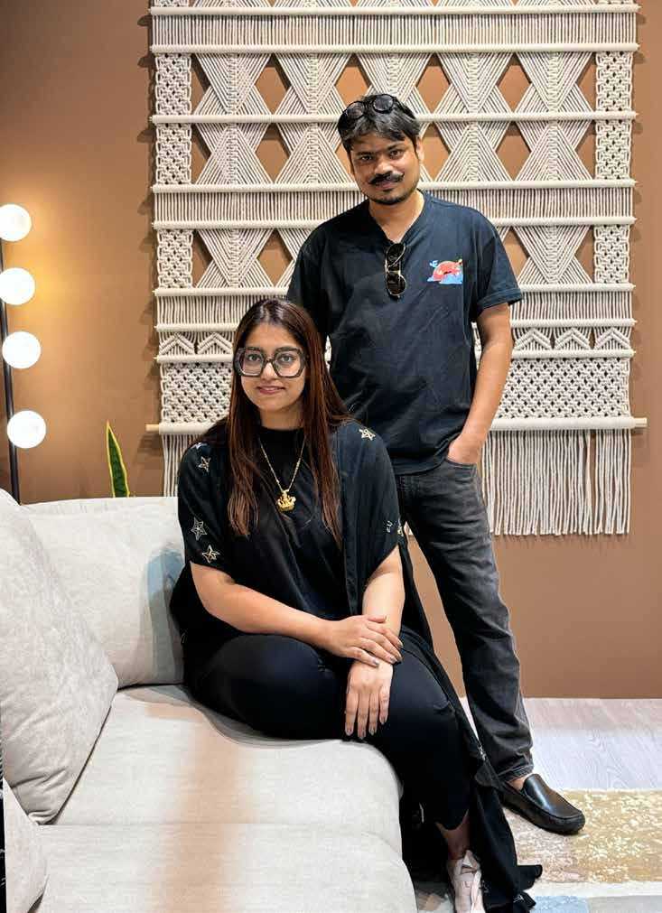
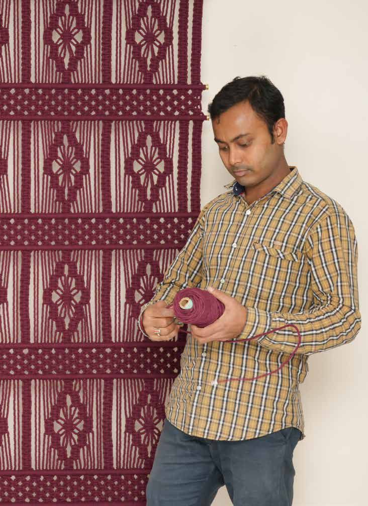

The Atelier

"Handmade craft belongs at the highest level of luxury. And the artisans behind it deserve to be celebrated, not forgotten."Prabhat Kumar · Co-founder
Knotty Things is the culmination of over four decades of collective design mastery and a passion for India's rich artisanal heritage. The brand blends purpose with design, bringing intricate fiber art to life through luxuriously handcrafted macramé.
We push the boundaries of material and form, creating large-scale macramé that transforms spaces into immersive works of art. Rooted in tradition yet crafted for contemporary luxury.
Three years of research, refinement and artisanal ecosystem mapping. Nine months since launch, and a rapidly evolving atelier that spans tapestry to sculpture.

"My fingers still remembered the knots, but my heart was forgetting."Raja Ram Pradhan
In a small village in West Bengal, Rajaram grew up weaving Madur carpets from local weeds and grass. Over time he mastered macramé, working in export houses as a skilled maker of fashion accessories.
Then the pandemic struck; exports came to a screeching halt and Rajaram returned home. With no financial avenue through craft, he became an electrician, earning a living but losing the joy of crafting macramé.
Upon hearing his story, we knew we couldn't let this disservice to his talent continue. We placed the threads back into his hands. Today Rajaram is our master craftsman, creating macramé that carries heritage techniques to the discerning modern palette.
The grinder runs before the artisan begins. Every design is pulled apart and put back together until the vision and the form agree.
Every work begins with a word and what it holds: a jharokha, a Zen garden, the phases of the moon.
Sketched by hand, refined on screen, tested in 3D for sculptural works.
Messy. Repetitive. Necessary.
Brass, fiber and reed, refined over hundreds of hours.
Don't marry your first idea.
Consciously slow-produced by master artisans, using the finest materials for a soothing visual and tactile experience.
A shock-absorbing paper roll, branded wooden lids, beige thread. The delight begins before the box is opened.
Hung on brass-capped rods or suspended on steel, a work that invites conversation, awe and intrigue.
Art can transform lives. Our partnership with artisans goes beyond fair wages: we invest in their communities, provide ongoing training, and create a global platform for their extraordinary skills.